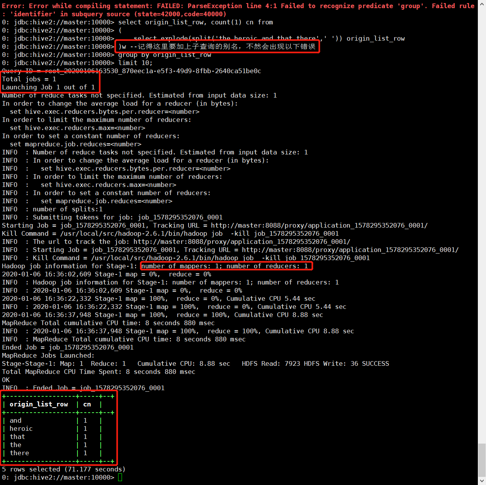
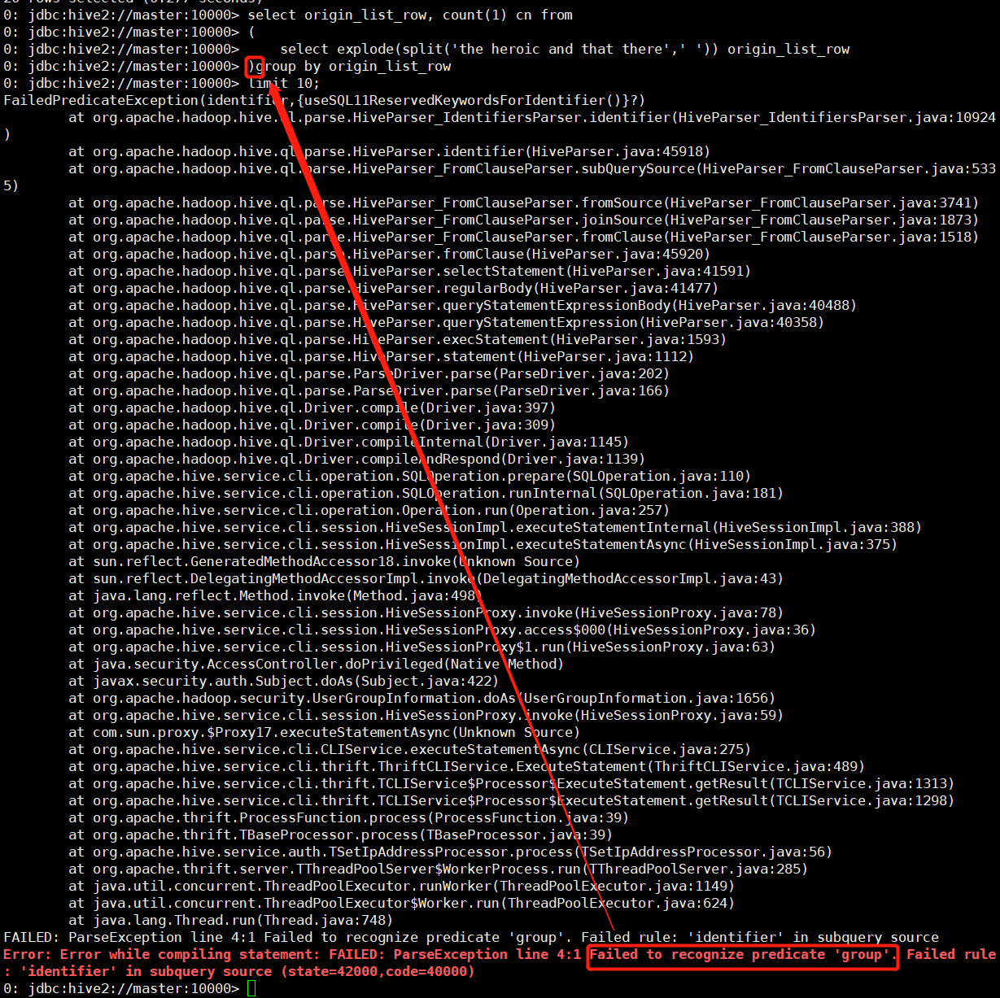

移花接木-Hive
01. Hive 1.x
02. Beeline连接Hive（Review）
- 这里使用的是
Hive Metastore ➡ hiveserver2 ➡ beeline的连接方式（启动方式见下方）. - 也可以使用
Hive Metastore ➡ hive（CLI）的连接方式
# 配置了hive.metastore.uris后需开启 Metastore
# 后缀为重定向，需百度解决（已解决，详见20191219-2254-Hive-1-x）
hive --service metastore 1>/dev/null 2>&1 &
# beeline方式连接Hive，默认端口为10000
hive --service hiveserver2 &
#beeline
#!connect jdbc:hive2://master:10000 root 123456
beeline -u jdbc:hive2://master:10000 -n root -p 123456 --color=trueTips 仅退出当前beeline: !close 彻底退出: !q 查询表: !tables
03. Hive 元素
3-1 元数据 & 数据
- Hive中的表是纯逻辑表，即
元数据； - 数据存储在
HDFS上，元数据与数据存储分离； - 数据计算依赖分布式计算框架 MapReduce；
- Hive
读多写少，从HDFS中读，MR计算，并写回HDFS；不支持数据改写&删除； - 用户需指定
三个属性用来定义数据格式：
列分隔符：空格 ‘,’ ‘\t’
行分隔符：’\n’
读取数据的方法
3-2 Hive 架构
CLI Hive Metastore → hiveserver2(HS2) → BeelineJDBC Metastore → Java/Python/C++WUI apache-hive-0.13.0-src.tar.gz → hive –service hwi
3-3 Hive HDFS
04. 数据入库
4-1 建表
- Local数据导入，数据位于Master节点
--databases list
0: jdbc:hive2://master:10000> show databases;
OK
+----------------+--+
| database_name |
+----------------+--+
| badou |
| default |
+----------------+--+
--查询库路径
0: jdbc:hive2://master:10000> desc database badou;
OK
+----------+----------+----------------------------------------------------------------------------+-------------+-------------+-------------+--+
| db_name | comment | location | owner_name | owner_type | parameters |
+----------+----------+----------------------------------------------------------------------------+-------------+-------------+-------------+--+
| badou | | hdfs://master:9000/usr/local/src/apache-hive-1.2.2-bin/warehouse/badou.db | root | USER | |
+----------+----------+----------------------------------------------------------------------------+-------------+-------------+-------------+--+
1 row selected (0.225 seconds)
0: jdbc:hive2://master:10000> use badou;
OK
--元数据建立
0: jdbc:hive2://master:10000> create table article(sentence string) --一句话就是一行
row format delimited fields terminated by '\n';--每一行的format
0: jdbc:hive2://master:10000> desc article; --查询表结构
--数据导入前，表为空
0: jdbc:hive2://master:10000> select article.sentence from article limit 2;
--本地数据load（Local Load）,注意这里是Linux服务器本地数据导入
0: jdbc:hive2://master:10000> load data local inpath '/data/mr_wc/The_man_of_property.txt' into table article;
--再次查询
0: jdbc:hive2://master:10000> select article.sentence from article limit 1;
OK
+-------------------+--+
| article.sentence |
+-------------------+--+
| Preface |
+-------------------+--+
1 row selected (0.185 seconds)- HDFS数据目录
- 入库的article.txt数据load进了HDFS对应目录
- 一句对应sentence列中的一行，现在要做Word Count，相当于将每行sentence切分为一个个单词，并转换进同一列（一个单词一行，所有单词并入同一列）
[root@master sbin]# hadoop fs -ls /usr/local/src/apache-hive-1.2.2-bin/warehouse/badou.db/article/
Found 1 items
-rwx-wx-wx 1 root supergroup 632207 2019-12-24 14:34 /usr/local/src/apache-hive-1.2.2-bin/warehouse/badou.db/article/operty.txt
--单词按照空格切分，结果为数组格式，以下是样例演示
--Hive里很特别，语句不限于SQL模式，可以将HQL的结果按照数据下标提取出来
0: jdbc:hive2://master:10000> select 'the heroic and that there' as origin,
0: jdbc:hive2://master:10000> split('the heroic and that there',' ') as origin_list,
0: jdbc:hive2://master:10000> split('the heroic and that there',' ')[0] as word1,
0: jdbc:hive2://master:10000> split('the heroic and that there',' ')[1] as word2;
+----------------------------+----------------------------------------+--------+---------+--+
| origin | origin_list | word1 | word2 |
+----------------------------+----------------------------------------+--------+---------+--+
| the heroic and that there | ["the","heroic","and","that","there"] | the | heroic |
+----------------------------+----------------------------------------+--------+---------+--+
--单行转多行
0: jdbc:hive2://master:10000> select explode(split('the heroic and that there',' ')) origin_list_row;
OK
+------------------+--+
| origin_list_row |
+------------------+--+
| the |
| heroic |
| and |
| that |
| there |
+------------------+--+
--wc
select origin_list_row, count(1) cn from
(
select explode(split('the heroic and that there',' ')) origin_list_row
)w --记得这里要加上子查询的别名，不然会出现以下错误
group by origin_list_row
limit 100;iii. 这里涉及了group by，会跑一组MR

TipsHQL内子查询的外侧要起别名，遗漏时会报错

4-2 数据清洗
正则过滤
--HQL
select regexp_extract('(mentioned', '[[\\w]]+', 0);
select regexp_extract('(mentioned', '[[0-9a-zA-Z]]+', 0);
--regexp_extract
select * from
(
select regexp_extract(origin_list_row, '[[0-9a-zA-Z]]+', 0) word, count(1) cn from
-- select origin_list_row, count(1) cn from
(
select explode(split(sentence,' ')) origin_list_row from article
)a --记得这里要加上子查询的别名，不然会出现以下错误
group by regexp_extract(origin_list_row, '[[0-9a-zA-Z]]+', 0) --Jobs:1 Map: 1 Reduce: 1
)b
where length(word) > 0 --去除None值
order by cn desc
limit 100; --加上排序后，Jobs:2 Map: 2 Reduce: 2
--部分样例对比结果如下：
⬇ RE过滤 ⬇ 原始单词
+-----------+-----+--+ +-----------------------+-----+--+
| word | cn | | origin_list_row | cn |
+-----------+-----+--+ +-----------------------+-----+--+
| | 35 | | | 35 |
| Baynes | 1 | | (Baynes | 1 |
| Dartie | 1 | | (Dartie | 1 |
| Dartie | 1 | | (Dartie’s | 1 |
| Down | 2 | | (Down-by-the-starn) | 2 |
| Down | 1 | | (Down-by-the-starn), | 1 |
| He | 1 | | (He | 1 |
| I | 1 | | (I | 1 |
| James | 1 | | (James) | 1 |
| L500 | 1 | | (L500) | 1 |
| Louisa | 1 | | (Louisa | 1 |
| Mrs | 1 | | (Mrs. | 1 |
| Roger | 1 | | (Roger | 1 |
| Roger | 1 | | (Roger’s | 1 |
| Soames | 1 | | (Soames | 1 |
| Soames | 1 | | (Soames) | 1 |
| The | 1 | | (The | 1 |
| a | 5 | | (a | 5 |
| also | 1 | | (also | 1 |
| although | 1 | | (although | 1 |
+-----------+-----+--+ +-----------------------+-----+--+
--where条件的添加，去除空值
+-----------+-------+--+ +-----------+-------+--+
| b.word | b.cn | | b.word | b.cn |
+-----------+-------+--+ +-----------+-------+--+
| the | 5168 | | the | 5168 |
| of | 3425 | | of | 3425 |
| to | 2822 | | to | 2822 |
| and | 2686 | | and | 2686 |
| a | 2564 | | a | 2564 |
| he | 2251 | | he | 2251 |
| his | 1929 | | his | 1929 |
| in | 1753 | | in | 1753 |
| was | 1745 | | was | 1745 |
| had | 1534 | | had | 1534 |
| that | 1387 | | that | 1387 |
| | 1309 | | her | 1200 |
| her | 1200 | | with | 1037 |
| with | 1037 | | it | 976 |
| it | 976 | | at | 822 |
| at | 822 | | for | 798 |
+-----------+-------+--+ +-----------+-------+--+4-3 分区/分桶（详见04）
05. 分桶
有点绕的概念（还未弄懂）
语法 tablesample(bucket x out of y on id)
TABLESAMPLE (BUCKET x OUT OF y [ON colname])本博客所有文章除特别声明外，均采用 CC BY-SA 3.0协议 。转载请注明出处！